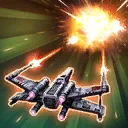

Colonel Ward
A seasoned Colonel of the New Republic and former Rebel pilot, Ward supports her allies on the battlefield
A seasoned Colonel of the New Republic and former Rebel pilot, Ward supports her allies on the battlefield
Deal Physical damage to target enemy and inflict Evasion Down for 1 turn. If it's Ward's turn, also inflict Defense Down for 1 turn.
Dispel all debuffs on target ally. The next time the target ally counterattacks, they inflict Evasion Down on the enemy for 1 turn.
Dispel Stealth from all enemies. Each enemy that lost Stealth this way is Marked for 2 turns. Inflict all enemies with Critical Damage Down and Expose them for 2 turns.

Deal Physical damage to all enemies, inflict them with Burning and Healing Immunity for 2 turns.
henever a Support or Healer ally is damaged by an enemy ability while an ally is Taunting, Ward inflicts the enemy with Evasion Down for 1 turn.
Whenever the enemy dispels Retaliate on any ally, New Republic allies gain 10% Offense (stacking, max 50%) when attacking enemies out of turn. Whenever allies trigger Expose out of turn, they gain Critical Damage Up for 1 turn. Whenever Ward uses X-Haul Fly-by, if any enemies have On the Run, all New Republic allies assist the next time any ally counterattacks.
If all allies were New Republic at the start of battle: Whenever a Taunting Tank ally is damaged, the enemy that damaged them is Ability Blocked for 1 turn. If there is an allied New Republic Galactic Legend or there are no other Galactic Legends in the battle, whenever a Healer or Support ally is damaged by an enemy ability while an ally is Taunting, increase all cooldowns of the enemy who damaged them by 1 (excluding raid bosses and Galactic Legends) and the enemy gains 1 stack of On the Run.
Omicron Boost : While in Grand Arenas: At the start of battle, all New Republic allies gain 10% Potency and Tenacity for each New Republic ally until the end of battle.
If all allies are New Republic at the start of battle, enemies start the battle with 2 stacks of On the Run. If there is an allied New Republic Galactic Legend or there are no other Galactic Legends in the battle, whenever enemies gain a stack of On the Run, Ward inflicts them with an additional stack of On the Run (once per target enemy’s turn). When enemies take damage from On the Run, they are also Exposed for 1 turn.